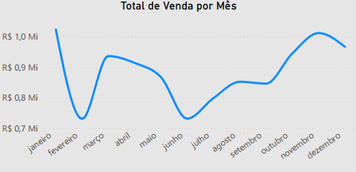

Project: BiteSpeed Dashboard - Operational and Sales Performance Analysis
Introduction
This project presents a Dashboard developed for the fictional company BiteSpeed, with the primary objective of providing a consolidated and actionable view of sales operations and customer service performance. The solution was designed to allow managers and operational teams to monitor key sales and production metrics and, crucially, the average service time across different channels and regions. By integrating sales, service, and customer demographic data, the dashboard empowers the company to identify bottlenecks, optimize processes, improve customer experience, and direct marketing campaigns more effectively.
Project Structure
The main requirements and indicators developed for this analysis, aiming for more efficient business management, were:
- Global Financial and Operational Performance: Total Sales, Total Production, and Quantity Sold, offering a macro overview of the company’s business volume.
- Regional Performance: Analysis of sales and other metrics by geographical regions (Central, East, North, West, South).
- Customer Service Time: Monitoring of the average service time, detailed by service type (Drive-Thru, Delivery, Counter), by customer gender, and, in a granular way, by specific employees.
- Geographic Analysis of Service: Visualization of the average service time by state, highlighting areas that require attention or that perform exceptionally well.
- Sales Composition by Product: Detailing total sales by product category (Hamburger, Dessert, Drink, Side Dish).
- Profitability by Category: Calculation of the profit generated by each product category, allowing for strategic decisions on the product mix.
- Sales Trend Over Time: Graph of the evolution of total sales throughout the months of the year, to identify seasonality and consumption patterns.
- Sales Demographics: Analysis of sales distribution by age group and gender, offering valuable insights for marketing campaigns and audience segmentation.
Technologies Used
For the construction of this analytical dashboard, the tools employed were:
Power BI Desktop: To connect data sources, perform the necessary modeling and transformation, and develop the interactive visuals that compose the dashboard.
Figma: The prototyping and design of the dashboard were done with Figma.
ETL Process (Extraction, Transformation, and Loading)
The ETL process for the BiteSpeed Dashboard was carefully planned to ensure data quality and integrity:
- Extraction: Data was obtained from its operational sources, which in a quick-service environment would include Point of Sale (POS) systems for sales, order management systems for service times, HR systems for employee data. The data was provided in
.xlsand.csvformats, containing detailed information about transactions, products, service times, and customer demographics. - Transformation: In Power Query, an integral part of Power BI, various cleaning and enrichment operations were performed. This included:
- Standardization of region names and product categories.
- Handling of temporal data to allow analysis by month.
Data modeling was fundamental to establish relationships between fact and dimension tables, ensuring that all information could be correctly filtered and viewed together.
- Loading: After the extraction and transformation steps, the data was loaded into the Power BI data model, ready to feed all the charts and tables of the dashboard, allowing for interactive exploration.
Dashboard
The dashboard features an organized layout to provide a clear view of the main indicators at a glance. The interface uses a combination of KPI cards for overall totals, bar charts for comparisons (by product, category), donut charts for proportions (service time by type/gender), and a heatmap for the geographical analysis of service time. Interactivity is a key differentiator, allowing users to filter data by region, period, or even by employee, facilitating the exploration of specific insights and the identification of areas for improvement.

Insights
The analysis of the data presented in the Dashboard revealed valuable insights into the company’s operational and commercial performance:
- Consolidated Financial and Operational View:
- In the overall panorama, the dashboard highlights important indicators: Total Sales of R$ 10.6 Million, Quantity Sold of R$ 21.3 Thousand items, and Total Production of R$ 100.4 Thousand units. These metrics offer a solid base for understanding the scale of the company’s operations.

- Sales Trend by Month:
- The “Total Sales by Month” chart shows the progression of sales throughout the year (from January to December). The trend line allows for the identification of seasonal patterns or the impact of specific campaigns. For a business, this visualization is fundamental for planning inventory, personnel allocation, and future marketing strategies.

- Sales Performance and Profit by Product Category:
- The Hamburger category significantly stands out in sales with R$ 4.9 Million, Dessert contributes R$ 3.0 Million in sales, Drinks with R$ 1.4 Million, and Sides with R$ 1.4 Million.
This insight is vital for optimizing the product mix and profitability strategies.
- Detailed Service Time Analysis:
- The dashboard offers a multifaceted view of the average service time, crucial for customer satisfaction.
- By Service Type: The average service time is 7.82 minutes for Counter (representing 32.65% of total service time) and 8.13 minutes for Drive-Thru (33.91%).
- Delivery records an average of 8.01 minutes (33.44% of total service time).
Identifying these averages allows the company to invest in specific training or process improvements for channels and audiences that experience longer service times.
- Individual Service Performance:
- In addition to general averages, the dashboard allows tracking the service time of specific employees: Aaron Kelley (10 min), Aaron Lyons (4 min), and Aaron Mccall (7 min). This granularity is extremely useful for identifying high-performing employees who can serve as examples, and for offering support or additional training to those who need to optimize their service time.
- Sales by Age Group and Gender:
- The bar charts for “Sales by Age Group and Gender” are essential for understanding the consumer profile. They show the distribution of sales by age groups (18-30 Years, 31-50 Years, 51-70+ Years) and segregate this information by gender (female and male, inferred by the two distinct bars for each age group).
- It is observed that sales are significant across all age groups, but with distinct volumes in each. Notably, the 31-50 and 51-70+ age groups are ahead of the younger 18-30 age group, and a clear balance between genders can be observed.
These demographic insights are important for the marketing team, allowing for the creation of highly personalized campaigns, specific promotions for certain groups, or even the development of products that better meet the preferences of different customer segments.
Considerations
The Dashboard offered a series of opportunities for optimization and growth. From the insights obtained, some important considerations arise:
- Customer Service Optimization: The detailed analysis of service times by type (Drive-Thru, Delivery, Counter) and by state is crucial. The company can implement specific training, reorganize teams, or invest in technology to reduce these times, directly impacting customer satisfaction and the ability to serve more consumers.
- Product and Profitability Strategies: The concentration of profit in the hamburger category demands attention. It is vital to investigate why other categories do not show apparent profit and explore ways to optimize their margins, whether through renegotiation with suppliers, optimization of production processes, or price adjustments. The dashboard suggests the need for a more in-depth cost and pricing analysis in other categories.
- Data-Driven Marketing: The segmentation of sales by age group and gender allows the marketing team to create highly personalized campaigns. For example, if the “18-30 Years” age group proves to be a strong segment, the company can direct advertising on social platforms popular among this audience.
- Employee Performance Management: Individual tracking of employee service time, such as Aaron Kelley, Lyons, and Mccall, is a powerful tool for performance management. This allows identifying training needs, recognizing and rewarding efficiency, and fostering a work environment focused on continuous service improvement.
- Regional Expansion and Optimization: The service time map by state can guide future expansion decisions or the need for interventions in branches in underperforming states.
Conclusion
The Dashboard was an essential analytical tool that transforms operational and sales data into actionable intelligence. Its main contribution lies in its ability to:
- Provide a comprehensive financial and operational overview, facilitating the monitoring of sales and production goals.
- Detail customer service performance from various angles (channel, gender, individual, location), allowing for surgical interventions for improvement.
- Offer deep demographic insights into customers, supporting marketing strategies and product development.
- Identify opportunities to optimize the product mix and category profitability.
This project demonstrates the ability to build BI solutions that empower companies to deeply understand their operations, improve customer experience, and make strategic decisions based on data, driving growth and efficiency in a competitive market like quick-service.